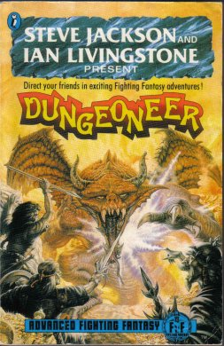

August/September 2022
A la recherche du meilleur système (simple) de JDR#
Gestion des tests simples#
Les tests simples sont utilisés pour les tests de compétences.
Il peuvent prendre les deux grandes formes suivantes :
- Des tests contre des facteurs de difficulté si la compétence est notée numériquement (jet de
XdYsous la compétence), - Des tests au dessus d'un facteur de difficulté avec un mécanisme de compétence comptant comme bonus au jeu de dés.
Généralement, les systèmes de JDR gèrent cela sans problème notable. Il faut juste s'assurer que les statistiques ne soient pas tordues (voir l'article sur les systèmes D6).
Il faut noter une différence importante sur les tests à base de compétence : le test sous la compétence n'oblige pas le MJ à déterminer un facteur de difficulté dans la plupart des cas. Des bonus et malus peuvent être appliqués dans des cas exceptionnels mais le joueur connaît sa chance de réussite de base dans tous les cas.
Par exemple, sur un système en pourcentage, si je possède 60% dans une compétence, je comprend immédiatement mes chances de réussite, le d100 étant, de plus, linéaire.
Les systèmes à seuil de difficulté ont le désavantage de faire appel au MJ pour toutes les situations, ce qui, à la longue, peut entraîner un sentiment d'arbitraire chez les joueurs.
J'avoue que personnellement, je préfère les jets sous la compétence et évite les bonus/malus sauf cas exceptionnel ou scène cruciale.
Deux grands problèmes à résoudre#
En fait, les deux grands problèmes des systèmes de JDR sont les suivants :
- Équilibrer les combats (mêlée et à distance entre les joueurs et les adversaires),
- Équilibrer la magie ou les pouvoirs psy, à la fois entre les joueurs et avec les adversaires.
Certains jeux comme Call Of Cthulhu simplifient un peu le problème en déclarant que la magie est finalement réservée aux adversaires (fous). Certes, un PJ peut connaître un sort, mais pas au sens D&D.
D'autres jeux comme D&D deviennent intéressants dès lors que tous les PJs sont d'un niveau suffisant, et donc que les PJs ayant des sorts peuvent les utiliser. Dans les premiers niveaux, l'intérêt est quand même très limité. Et, à plus haut niveau, l'équilibre redevient compliqué (et n'est pas le même suivant les éditions, d'ailleurs je dois investiguer la quatrième édition sur ce sujet).
D'autres jeux comme Ars Magica préviennent dès le début que le magicien sera le plus fort et de loin (et donc les PJs ne sont pas équilibrés).
Dans les nouveaux moteurs de jeux simplifiés (FU, Black Hack et consorts), je reste sur ma faim car cette équation est finalement mal résolue. En fait, je cherche depuis longtemps un moteur de jeux simplifié gérant correctement la magie et les combats avec des mécanismes simples et extensibles.
La façon de Dungeoneer de résoudre le problème#
Dans ma recherche, après avoir traduit et compressé les règles de Fighting Fantasy (disponible ici ou sur itch.io, j'ai récupéré une copie d'Advanced Fighting Fantasy - Dungeoneer, une extension du jeu de Steve Jackson et de Ian Livingstone.

Advanced Fighting Fantasy - Dungeoneer
L'extension concerne deux dimensions :
- Des talents (compétences avancées ou advanced skills),
- Un système de magie.
Les talents fonctionnent comme des bonus, par exemple un talent de combat à l'épée de 2 donnera un bonus de 2 lors du combat contre l'adversaire. Ainsi, le joueur tirera COMP+2D6+2 contre un adversaire.
Le joueur a COMP points à répartir dans ses talents.
La système de magie est assez malin et en deux temps :
- A la création du PJ, le joueur doit choisir de combien de points il ampute sa
COMPpour créer son score de magie (pris sur les points de compétences avancées). Supposons que j'ai tiré1d6+6pour maCOMPet que j'obtienne10. Je décide d'affecter4points à la magie. J'aurais doncCOMP=6etMagie (4). Pour réussir un sort, je devrai donc faire un jet sous maCOMP+Magie, ce qui est maCOMPinitiale. - Suivant la difficulté du sort, je perdrai un certain nombre de
PdV. - Cela signifie aussi que pour toutes mes autres compétences non magiques, ma
COMPrestera à6et donc j'aurai moins de chances de réussite structurellement. - Le nombre de points restant pour les autres talents est de
COMP-Magie= 10-4=6ce qui équilibre la magie avec les autres compétences.
Évidemment, dans ce système, on peut se poser la question si faire un jet de 2d6 sous la COMP+Compétence avancée n'est pas un peu facile. Il est précisé dans le jeu qu'un 12 est toujours un échec, mais effectivement, on retrouve l'aspect un peu "facile" de Fighting Fantasy original.
Notamment, si je suis un guerrier non magicien et que COMP=10, alors j'ai 10 points à répartir dans ma compétence. Comme 12 est toujours un échec, je peux décider de n'investir que 1 en Combat à l'épée, à moins que je ne décide d'investir 4 en prévision des malus futurs.
La façon Troika!#
Troika! prend une approche encore plus simple sur deux dimensions :
- La
COMPest tirée avec1d3+3seulement, ce qui rend les jets sous laCOMP+Compétence avancée(beaucoup) plus difficiles (trop ?) ; - La magie est une compétence avancée comme une autre (même si l'utilisation des sorts fait perdre des points de vie).
Il y a certains avantages à ce système :
- Il est encore plus simple que celui de Dungeoneer ;
- Il permet à tous les archétypes de personnage d'avoir des compétences avancées et des sorts, sans distinction ;
- Il est basé sur un système de points de compétences à répartir qui contient les compétences avancées (talents) et sorts mis sur un pied d'égalité, système qui ne dépend pas de la
COMPet donc qui ne possède cet effet "double-peine" qui est qu'uneCOMPfaible implique une restriction sur les talents à la création du personnage.
Les règles proposent de créer des archétypes à partir de 10 points de talents, même si, dans le livre de base, certains archétypes sont créés à partir de 13 voire 14 points de talents.
Une grille d'analyse hyper-simple des moteurs de JDR#
Cela fait donc une grille d'analyse à trois dimensions très simple :
| Dimension | Enjeu | Difficulté de conception |
|---|---|---|
| Tests simples | Ne pas faire intervenir le MJ pour des facteurs de difficulté à chaque action | Moyen |
| Équilibre des combats | Entre un PJ et un adversaire (combat en mêlée et à distance) | Facile |
| Équilibre de la magie/pouvoirs psy | Dans la dimension, équilibre des PJs ensemble, et contre les adversaires | Difficile |
Application à quelques jeux#
Prenons les notes possibles suivantes :
A: très bien pris en charge ;B: moyennement pris en charge ;C: mal pris en charge ;I: inapplicable, le jeu a évité le problème.
| Jeu | Tests simples | Equilibre combats | Equilibre magie / psy | Complexité |
|---|---|---|---|---|
| CoC | A |
A |
I |
2 |
| D&D | A |
A |
A, B ou C suivant les éditions |
3 |
| GURPS | A |
A |
A |
3 |
| FF | A |
A |
I |
1 |
| AFF Dungeoneer | A |
A |
A |
1 |
| Troika! | A |
Sans doute B |
A |
1 |
| Ars Magica | A |
A |
I |
3 |
| Risus | B |
B voir ici |
B |
1 |
18 septembre 2022
NeoMega pour Froika!#
Bon, la réflexion avance. Dès que j'ai fini la traduction de Troika! (nom actuel Froika!), je me lance dans l'adaptation à Méga. Si j'aime beaucoup l'univers et le travail remarquable fait dans le cadre de l'Encyclopédie Galactique, je trouve que de nombreux points n'ont pas été exploités :
- Tout d'abord, la timeline décrite dans Méga 3 et étoffée dans Méga 4 reste évasive et des détails manquent quant à l'Eclipse des Soleils et les fameuses Choses du Vide.
- Ensuite, le fait de pouvoir transiter est déjà quelque chose de potentiellement déstabilisant pour une nation galactique, mais le fait de pouvoir se transférer pose un problème de sécurité galactique. Il est donc obligatoire que certains états aient, à un moment, considéré la Guilde comme une menace à éliminer.
- De plus, le monde de l'AG est un peu un monde de bisounours. Je ne dis pas que j'adore les mondes violents et apocalyptiques, mais un peu plus de plausibilité donnerait du corps au monde de Méga.
C'est pourquoi, je vais travailler en ce sens. Possible que ça ne donne pas grand chose, mais on sait jamais.
04 septembre 2022
Langue de pute#
J'ai donc fait une synthèse des scénarios des vieux Casus (première série) pour retrouver principalement tout ce qui concernant Cthulhu et Méga. J'ai aussi concaténé tout ce que je trouvais sur Laelith, première édition, y compris les scénarios D&D de Denis Beck.
J'ai découvert pas mal de choses :
- L'indécision totale du journal et son incapacité à suivre un sujet très longtemps.
- L'incompréhensible soutien à Simulacres, ce jeu complètement merdique, malgré les efforts démentiels de son auteur pour l'imposer de force et en mettre de partout, alors qu'à l'époque, les systèmes D&D et AdC étaient les plus pratiqués. Au lieu de faire des pages et des pages pour Simulacres, pourquoi ne pas traduire les scénarios pour les différents systèmes de jeux ? Avec le recul, on voit que l'Heroic Fantasy à la D&D ou l'horreur lovecraftienne à la Call Of Cthulhu passent par tous les systèmes...
- L'incompréhensible spécialisation des scénarios à un système de jeu. Par exemple, tout jeu D&D aurait pu avoir sa traduction pour Runequest ou Warhammer. Je crois avoir vu cela dans un seul numéro de Casus. Et comment font les joueurs ? Ils font la traduction seuls ? Ils sont supposés connaître tous les jeux et posséder tous les suppléments ?
- L'hyperfocalisation sur Shadowrun qui n'est tout de même pas le jeu du siècle.
- Des scénarios sur des jeux de troisième zone, hyper-spécialisés, impossibles à trouver en boutique à l'époque et impossibles à adapter.
- Un soutien absolu à Rêve de Dragon que, franchement, personne ne jouait autour de moi. Bon, OK, Denis Gerfaud est sympa, mais quand même.
- Je m'étais toujours demandé pourquoi Pendragon n'avait pas percé en France, mais c'était parce que tout le monde voulait faire la promo des Légendes de la Table Ronde qui, vu de moi, fut un bide complet. On en arrive un moment au comble : l'auteure du jeu LDLTR (Anne Vétillard) écrivant des scénarios pour Pendragon ! Mais si tard... Pendragon est méconnu en France et LDLTR est tombé dans l'oubli. C'est la double-peine ! Quel gâchis !
- Pourquoi avoir gardé des pages sur les wargames ? Il y avait des lecteurs ?
- Et la pub... Mon dieu, tant de pubs...
Au final, quand on se tape tous les Casus première mouture, on comprend comment, petit à petit, le public a fui. Sur certains numéros, il n'y a rien à garder, même du côté des scénarios.
Enfin, il reste certains scénarios pas mal, mais ils sont souvent des mêmes auteurs (notamment Denis Beck et Tristan Lhomme, j'aime bien aussi Jean Balczesak)...
Tempus fugit.
28 août 2022
Un été tranquille#
Bon, pas mal de choses :
- Je poursuis la traduction de Troika! avec une approche un peu personnelle des illustrations. Mais c'est lent.
- J'ai pas mal travaillé sur la comparaison entre les systèmes de jeu de Fighting Fantasy, celui de Advanced Fighting Fantasy 1e, et celui de Troika!. Ce n'est pas encore prêt mais c'est assez intéressant.
- En parallèle, je travaille sur l'adaptation du système AFF à Méga, pour avoir quelque chose plus élaboré que ça mais quand même hyper-simple.
- J'ai découvert Ars Magica pendant les vacances notamment avec la deuxième édition de 1989 de Lion Rampant (avant les versions White Wolf). J'avoue que ce jeu est assez fascinant, un peu dans le genre du jeu de rôle que j'aurais toujours voulu jouer au Moyen-âge. J'y reviendrai.
- J'ai trouvé une bonne occase de D&D 4e DMG sur eBay. Je suis content.
- Je me suis fait une compil des scénarios pour Méga des vieux Casus. Je pense à la faire imprimer par Lulu. J'ai fait pareil pour les scénars Cthulhu.
- J'ai travaillé sur une page de Links en anglais qui vient d'un refresh de cette page.
Au fait, D&D 6e est en route ! Ça se passe ici : https://www.dndbeyond.com/one-dnd. Excitant, non ?
27 août 2022